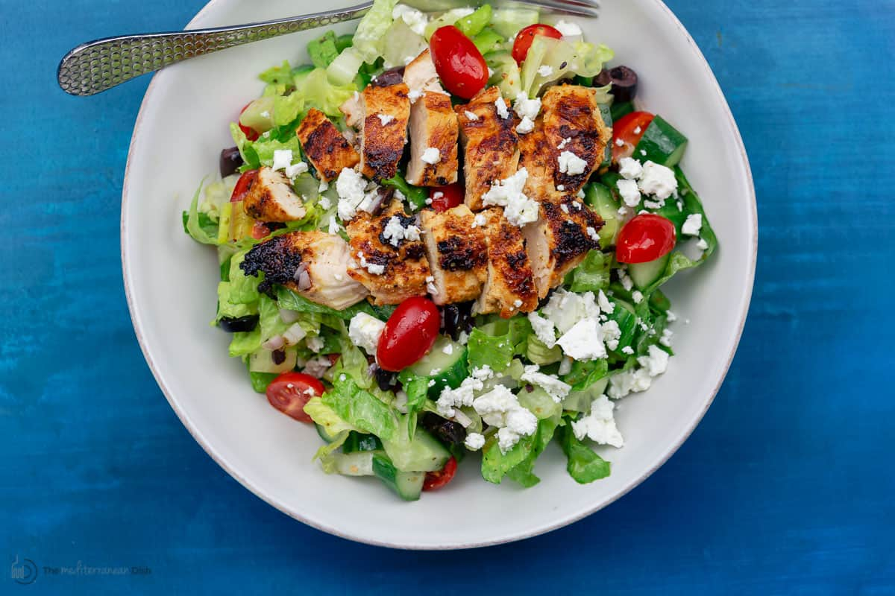

Garden Salad with Chicken

Description
This is a low fat take on a classic garden salad with chunks of chicken breast.
Ingredients
- mixed salad greens
- carrots (orange, yellow, and purple)
- yellow bell pepper
- cherry tomatoes
- kalamata olives
- reduced fat feta cheese
- chicken breast
- fat free Italian dressing
Steps
- Either grill or sauté the chicken breast. If grilling, cook the breast whole and then cut into chunks once cooked. If sautéing, cut the breast into chunks before cooking.
- Prepare the vegetables. Slice the carrots, halve the tomatoes and olives, and dice the bell pepper.
- Assemble the salad. Place the desired amount of greens into a bowl, then add the vegetables and cooked chicken.
- Crumble the desired amount of feta on top of the salad.
- Toss with dressing and enjoy!